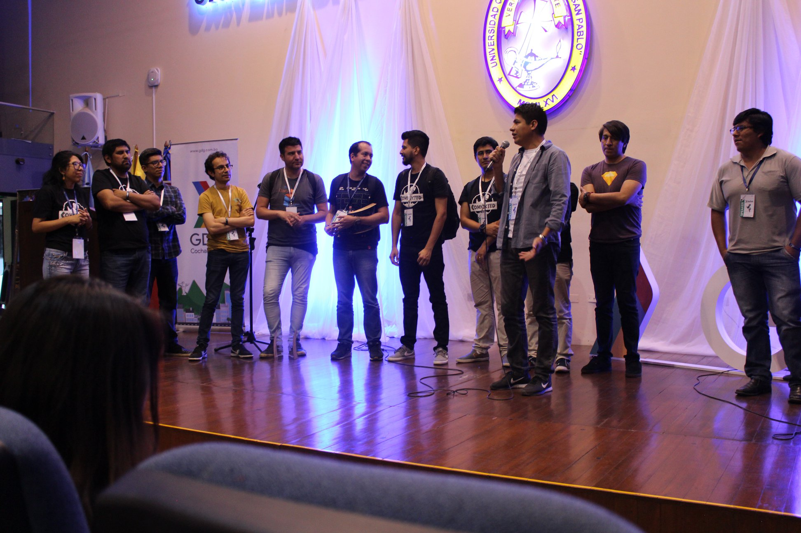
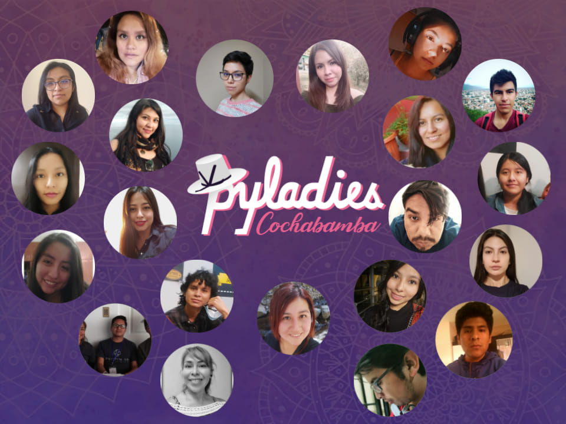

Communities
Google Developer Groups
Google Developer Groups (GDGs) are community-led groups for developers who are interested in Google's developer technology. Each GDG chapter brings together local developers to learn, share, and connect through meetups, workshops, hackathons, and tech talks. These events cover a range of topics including Android, Google Cloud, Web technologies, machine learning, and more. Whether you're a beginner or an experienced developer, GDGs offer a supportive environment to grow your skills, collaborate on projects, and stay up to date with the latest in tech innovation.
Women Techmakers
Women Techmakers (WTM) is a global initiative by Google that provides visibility, community, and resources for women in technology. Through local events, leadership programs, and training opportunities, WTM aims to empower women to thrive in tech and create a more inclusive and diverse industry. Each WTM chapter brings together women and allies to share knowledge, build networks, and support one another in their careers. From coding workshops to inspirational talks, Women Techmakers is a platform where women in tech can learn, lead, and grow together.

PyLadies Cochabamba
PyLadies Cochabamba is an open, respectful, and inclusive tech community that promotes continuous learning of the Python programming language and its many applications. Its mission is to foster a dynamic and diverse community through activities such as workshops, meetups, talks, and courses, with the goal of encouraging people of all ages to explore the world of Python programming. PyLadies Cochabamba is also dedicated to empowering more women to enter the tech field by providing a supportive and collaborative environment for personal and professional growth.
